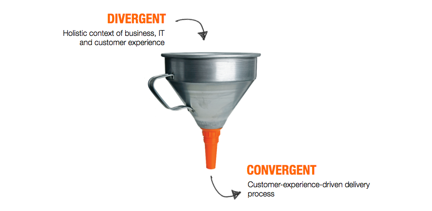
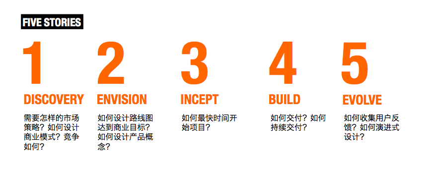
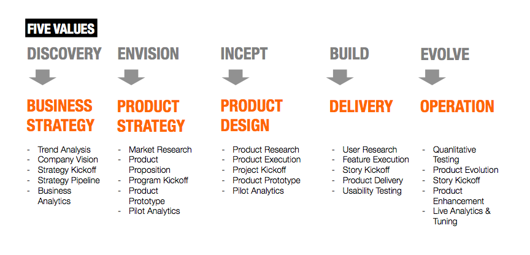
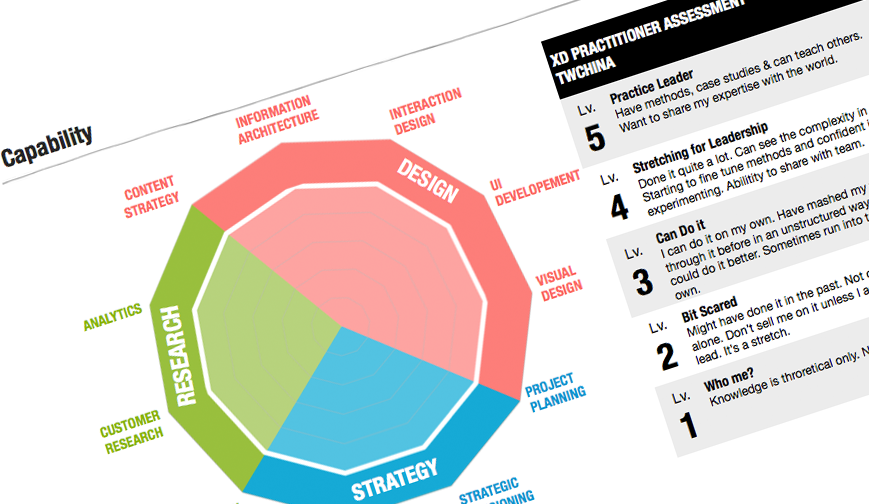

从2009年初开始，我一直跟随Marc McNeil学习和工作，在澳洲，新加坡，香港，英国，和客户一起实践Lean UX的方法设计软件和交付价值。2011年Marc把近5年的经验总结成了Agile Experience Design一书，我们也从2011年6月开始在各个办公室建立自己的体验设计团队，将设计的力量植入到ThoughtWorks的企业基因里。
2011年11月一个偶然的机会，我在越南参加Agile Tour的活动，作为演讲者（点击这里下载讲义）我结识了同样是讲师来自柬埔寨的英国创业者Chris Brown，他的讲演是Lean Startup，这个让我印象深刻的讲演（要翻墙）开始让我对精益创业（Lean Startup）产生兴趣。

我开始思考，或许我可以将Lean Startup的原则或方法运用在我的体验设计团队的建设当中来？从越南回来以后，我便开始了我的实践，建立一支完整的用户体验团队，运用精益创业的原理。
我需要一个商业模型
这是一切的开始，定义一个商业模型是任何一个Startup的开始，对我的团队也是一样──如果我把团队当成一个专业服务公司。
有很多方法帮助你设计商业模型，比如说Business Model Canvas，简而言之，它提出商业模型的9个核心问题：
- 核心价值是什么？(Value Proposition)
- 核心价值依靠什么传递给你的受众？产品？还是服务？(Channel)
- 受众是谁？(Customer Segment)
- 依靠什么获得受众的反馈？(Customer Relationship)
- 产生核心价值的业务活动是什么？(Key Activities)
- 内部支撑业务的资源是什么？(Key Resources)
- 外部支撑业务的合作伙伴是谁？(Key Partners)
- 盈利在哪里？(Revenue Structure) -成本在哪里？(Cost Structure)
当然这只是方法，关键的核心在于是不是能把这个关于一个组织如何运作的故事说得圆满，Lean Startup不在于没有任何东西便开始，任何成功的Lean Startup都源自一个吸引人的“故事”，这个故事就是接下来要打动VC的故事，哪怕它暂时没有盈利模式
原则一：一个清晰的商业模型是Lean Startup的核心，我说的是商业模型是一个完整的故事，而不是商业计划，故事的精彩程度可以抵销暂时没有盈利模式的风险
我需要卖我商业模型
越早把的商业模型卖出去意味着越早获得Early Adopter，对外部用户适用，对于你可能的赞助者也适用。所有这一切都是在于你讲故事的能力，也许你有一个好的模型（好故事），但是一个好的讲者也十分重要。这一次我售卖的对象是ThoughtWorks，我们自己。
我是这样讲我的故事：
我们是谁？
我们是一个漏斗，我们的Design Thinking帮助你们的软件开发从10,000英尺的高空落实到每次代码的提交──我们在帮助你们收敛。

我们是一个漏斗，我们的Design Thinking帮助你们的软件开发从10,000英尺的高空落实到每次代码的提交──我们在帮助你们收敛。
你们（ThoughtWorks）的故事是怎样的？
你们期待在客户IT项目的五个阶段里帮助客户回答这些问题──为什么做？做什么？怎么开始做？怎么做？怎么做得更好？

我们怎么帮助你？
在每个你的故事里，这就是我们可以帮助你的地方──我们在做什么？每件事情里我们都可以做哪些？

这就是一个故事的完整线索──我是谁？你是谁？为什么我可以帮助你？事情的结果是，我获得了可以获得最大的支持者，他甚至希望把这个模型演化成整个ThoughtWorks未来5年的基础模型，这就是Empathy的力量，这个跟感化你的VC道理一样。
原则二：讲一个好的故事，不要害怕你的故事被别人偷走，从一开始就让你未来想让他知道的人知道，感化他。
我需要定义我的MVP
MVP的全称是Minimum Viable Product，第一时间定义出一个Lean Startup的MVP意味着第一时间投入市场获得反馈，第一时间对产品进行修正，MVP包含三层含义：
- 最小的，Minimum：用最简单却不简陋的方案解决一个可以明确定义的问题，而不是一个大而全的聪明设计试图解决所有问题；
- 可行的，Viable：一定是一个有可能被市场接受的方案，这迫使你对你的市场和目标客户一定需要有一定的了解；
- 这是产品，Product：这是一个产品，可以被复制，可以由明确定义的技能和工序实现；
我们在每个阶段都定义出来了可能在未来实现的MVP，这些就是我们可以在最短时间内交付的服务，其中包括例如Incept阶段的Inception服务──如何用一周到两周的时间快速开始一个交付项目；以及Envision阶段如何快速设计概念原型，等等。
每项服务，都会被明确定义以下几项内容：
- 目标客户是谁？
- 解决是什么问题？
- 交付什么东西？
- 时间如何安排？
- 需要什么能力？
- 收费是多少？
接下来我做的事情是让销售充分理解我的MVP，听取他们的意见，并参与一切可能参与的客户讨论，在一开始就售卖我的MVP，他们是不是跟我们想的一样，是不是真的有需求，最迫切需要什么，这样的收费是不是合理？这些反馈都将帮助我们重新调整MVP，对于没有市场需要的MVP，第一时间暂停。
原则三：明确定义你MVP（最小交付产品），小而精，这是接下来市场、能力建设、招聘、销售的基础
我需要围绕MVP制定市场策略
当我们知道我们可以销售什么样的MVP服务，我们的市场策略也会非常明确──我们知道卖给谁，我们知道他们有什么问题，我们围绕类似服务包装案例等──从Demand的角度，市场的策略就是去把这些MVP售卖给潜在客户，直接且明确。
原则四：针针溅血的市场策略永远围绕你的MVP
我需要围绕MVP建立的能力模型
当MVP被定义出来以后，MVP中的活动被清晰化和模版化，这样能力模型也变得十分清晰──MVP中的每个活动都在干什么，需要什么样的技能支持，如何评价技能的成熟度。为了对现有团队成员的能力进行评估，我们使用自己总结的用户体验设计技能评价模型进行评估，了解当前的技能情况，发现哪些MVP我们马上就可以实施，能够实施多少，哪些我们需要能力培养，或者人才引入。

通过对MVP所需要能力、现在潜在MVP销售情况以及现有能力的比对，我们可以得出较为合理的：人员技能培养计划；个人职业发展计划；团队招聘计划；甚至绩效评估计划。这接下来的一切都紧紧围绕在MVP的标准定义化周围。
原则五：人员能力发展、扩张和评价永远围绕MVP
我需要围绕MVP和销售团队合作
当MVP是中心的时候，销售的目标变得非常明确，我了解我要卖给谁，我了解我应该说什么样的话可以让买家产生共鸣（对问题的共识），我了解我未来要卖什么。对于每一个MVP，我们都在准备一套完整的销售材料，包括良好的案例分析，帮助销售团队建立起围绕MVP的客户体系。这并不代表带着解决方案和客户进行交流，Lean Startup的特点是对现在持续不断地改进，甚至是抛弃，我们需要销售团队帮助我们完善我们的服务。
原则六：销售计划永远围绕MVP，销售是改进MVP的最佳伙伴
写在最后
这就是我们实践Lean Startup原则到我们企业内部团队建设的故事。事实上有很多大型的企业已经在企业内部或多或少实践着Lean Startup的精神，例如Nordstorm，作为一家年收入超过90亿美元的500强企业，他们的经验也许让我们有理由说，未来也许是Lean Enterprise的时代。
我们的团队分布在美国、澳洲、英国、印度、和中国，我们期待用我们的方式让ThoughtWorks变得更加完整，这样的方式不单单只我们的Agile UX的设计方法，也体现在我们如何使用 Lean的方式管理和建设我们的团队。
这是一次实验，我很高兴成为实验的一部分。如果你也有兴趣成为我们的一部分，可以和我联系@一只土贼。